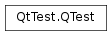

QTest¶
Synopsis¶
Static functions¶
- def
addColumnInternal(id, name) - def
asciiToKey(ascii) - def
compare_string_helper(t1, t2, actual, expected, file, line) - def
currentAppName() - def
currentDataTag() - def
currentTestFailed() - def
currentTestFunction() - def
ignoreMessage(type, message) - def
ignoreMessage(type, messagePattern) - def
keyToAscii(key) - def
qCleanup() - def
qElementData(elementName, metaTypeId) - def
qExpectFail(dataIndex, comment, mode, file, line) - def
qExtractTestData(dirName) - def
qFindTestData(basepath[, file=nullptr[, line=0[, builddir=nullptr]]]) - def
qFindTestData(basepath[, file=nullptr[, line=0[, builddir=nullptr]]]) - def
qGlobalData(tagName, typeId) - def
qRun() - def
qSkip(message, file, line) - def
setBenchmarkResult(result, metric) - def
setMainSourcePath(file[, builddir=nullptr]) - def
testObject() - def
toPrettyCString(unicode, length)
Detailed Description¶
The QTest namespace contains all the functions and declarations that are related to Qt Test.
See the Qt Test Overview for information about how to write unit tests.
-
PySide2.QtTest.QTest.TestFailMode¶ This enum describes the modes for handling an expected failure of the
QVERIFY()orQCOMPARE()macros.Constant Description QTest.Abort Aborts the execution of the test. Use this mode when it doesn’t make sense to execute the test any further after the expected failure. QTest.Continue Continues execution of the test after the expected failure. See also
QEXPECT_FAIL()
-
PySide2.QtTest.QTest.QBenchmarkMetric¶ This enum lists all the things that can be benchmarked.
Constant Description QTest.FramesPerSecond Frames per second QTest.BitsPerSecond Bits per second QTest.BytesPerSecond Bytes per second QTest.WalltimeMilliseconds Clock time in milliseconds QTest.WalltimeNanoseconds Clock time in nanoseconds QTest.BytesAllocated Memory usage in bytes QTest.Events Event count QTest.CPUTicks CPU time QTest.CPUMigrations Process migrations between CPUs QTest.CPUCycles CPU cycles QTest.RefCPUCycles Reference CPU cycles QTest.BusCycles Bus cycles QTest.StalledCycles Cycles stalled QTest.InstructionReads Instruction reads QTest.Instructions Instructions executed QTest.BranchInstructions Branch-type instructions QTest.BranchMisses Branch instructions that were mispredicted QTest.CacheReferences Cache accesses of any type QTest.CacheMisses Cache misses of any type QTest.CacheReads Cache reads / loads QTest.CacheReadMisses Cache read / load misses QTest.CacheWrites Cache writes / stores QTest.CacheWriteMisses Cache write / store misses QTest.CachePrefetches Cache prefetches QTest.CachePrefetchMisses Cache prefetch misses QTest.ContextSwitches Context switches QTest.PageFaults Page faults of any type QTest.MinorPageFaults Minor page faults QTest.MajorPageFaults Major page faults QTest.AlignmentFaults Faults caused due to misalignment QTest.EmulationFaults Faults that needed software emulation Note that
WalltimeNanosecondsandBytesAllocatedare only provided for use viaPySide2.QtTest.QTest.setBenchmarkResult(), and results in those metrics are not able to be provided automatically by the QTest framework.See also
QTest.benchmarkMetricName()QTest.benchmarkMetricUnit()
Note
This enum was introduced in Qt 4.7.
-
static
PySide2.QtTest.QTest.addColumnInternal(id, name)¶ Parameters: - id –
PySide2.QtCore.int - name – str
- id –
-
static
PySide2.QtTest.QTest.asciiToKey(ascii)¶ Parameters: ascii – PySide2.QtCore.charReturn type: PySide2.QtCore.Qt.KeyConvert an ascii char key value to a Qt Key value. If the key is unknown a 0 is returned.
Note: this may happen more than you like since not all known ascii keys _are_ converted already. So feel free to add all the keys you need.
-
static
PySide2.QtTest.QTest.compare_string_helper(t1, t2, actual, expected, file, line)¶ Parameters: - t1 – str
- t2 – str
- actual – str
- expected – str
- file – str
- line –
PySide2.QtCore.int
Return type: PySide2.QtCore.bool
-
static
PySide2.QtTest.QTest.currentAppName()¶ Return type: str Returns the name of the binary that is currently executed.
-
static
PySide2.QtTest.QTest.currentDataTag()¶ Return type: str Returns the name of the current test data. If the test doesn’t have any assigned testdata, the function returns 0.
-
static
PySide2.QtTest.QTest.currentTestFailed()¶ Return type: PySide2.QtCore.boolReturns
trueif the current test function failed, otherwise false.
-
static
PySide2.QtTest.QTest.currentTestFunction()¶ Return type: str Returns the name of the test function that is currently executed.
Example:
void MyTestClass.cleanup() { if (qstrcmp(currentTestFunction(), "myDatabaseTest") == 0) { // clean up all database connections closeAllDatabases() } }
-
static
PySide2.QtTest.QTest.ignoreMessage(type, message)¶ Parameters: - type –
PySide2.QtCore.QtMsgType - message – str
Ignores messages created by
qDebug(),qInfo()orqWarning(). If themessagewith the correspondingtypeis outputted, it will be removed from the test log. If the test finished and themessagewas not outputted, a test failure is appended to the test log.Note
Invoking this function will only ignore one message. If the message you want to ignore is outputted twice, you have to call twice, too.
Example:
QDir dir QTest.ignoreMessage(QtWarningMsg, "QDir.mkdir: Empty or null file name(s)") dir.mkdir("")
The example above tests that
QDir.mkdir()outputs the right warning when invoked with an invalid file name.- type –
-
static
PySide2.QtTest.QTest.ignoreMessage(type, messagePattern) Parameters: - type –
PySide2.QtCore.QtMsgType - messagePattern –
PySide2.QtCore.QRegularExpression
This is an overloaded function.
Ignores messages created by
qDebug(),qInfo()orqWarning(). If the message matchingmessagePatternwith the correspondingtypeis outputted, it will be removed from the test log. If the test finished and the message was not outputted, a test failure is appended to the test log.Note
Invoking this function will only ignore one message. If the message you want to ignore is outputted twice, you have to call
PySide2.QtTest.QTest.ignoreMessage()twice, too.- type –
-
static
PySide2.QtTest.QTest.keyToAscii(key)¶ Parameters: key – PySide2.QtCore.Qt.KeyReturn type: PySide2.QtCore.charConvert a Qt Key to an ascii char value. If the Qt key is unknown a 0 is returned.
Note: this may happen more than you like since not all known Qt keys _are_ converted already. So feel free to add all the keys you need.
-
static
PySide2.QtTest.QTest.qCleanup()¶
-
static
PySide2.QtTest.QTest.qElementData(elementName, metaTypeId)¶ Parameters: - elementName – str
- metaTypeId –
PySide2.QtCore.int
Return type: void
-
static
PySide2.QtTest.QTest.qExpectFail(dataIndex, comment, mode, file, line)¶ Parameters: - dataIndex – str
- comment – str
- mode –
PySide2.QtTest.QTest.TestFailMode - file – str
- line –
PySide2.QtCore.int
Return type: PySide2.QtCore.bool
-
static
PySide2.QtTest.QTest.qExtractTestData(dirName)¶ Parameters: dirName – unicode Return type: PySide2.QtQuick.QSharedPointerExtracts a directory from resources to disk. The content is extracted recursively to a temporary folder. The extracted content is removed automatically once the last reference to the return value goes out of scope.
dirNameis the name of the directory to extract from resources.Returns the temporary directory where the data was extracted or null in case of errors.
-
static
PySide2.QtTest.QTest.qFindTestData(basepath[, file=nullptr[, line=0[, builddir=nullptr]]])¶ Parameters: - basepath – str
- file – str
- line –
PySide2.QtCore.int - builddir – str
Return type: unicode
-
static
PySide2.QtTest.QTest.qFindTestData(basepath[, file=nullptr[, line=0[, builddir=nullptr]]]) Parameters: - basepath – unicode
- file – str
- line –
PySide2.QtCore.int - builddir – str
Return type: unicode
-
static
PySide2.QtTest.QTest.qGlobalData(tagName, typeId)¶ Parameters: - tagName – str
- typeId –
PySide2.QtCore.int
Return type: void
-
static
PySide2.QtTest.QTest.qRun()¶ Return type: PySide2.QtCore.int
-
static
PySide2.QtTest.QTest.qSkip(message, file, line)¶ Parameters: - message – str
- file – str
- line –
PySide2.QtCore.int
-
static
PySide2.QtTest.QTest.setBenchmarkResult(result, metric)¶ Parameters: - result –
PySide2.QtCore.qreal - metric –
PySide2.QtTest.QTest.QBenchmarkMetric
Sets the benchmark result for this test function to
result.Use this function if you want to report benchmark results without using the QBENCHMARK macro. Use
metricto specify how Qt Test should interpret the results.The context for the result will be the test function name and any data tag from the _data function. This function can only be called once in each test function, subsequent calls will replace the earlier reported results.
Note that the -iterations command line argument has no effect on test functions without the QBENCHMARK macro.
- result –
-
static
PySide2.QtTest.QTest.setMainSourcePath(file[, builddir=nullptr])¶ Parameters: - file – str
- builddir – str
-
static
PySide2.QtTest.QTest.testObject()¶ Return type: PySide2.QtCore.QObject
-
static
PySide2.QtTest.QTest.toPrettyCString(unicode, length)¶ Parameters: - unicode – str
- length –
PySide2.QtCore.int
Return type: PySide2.QtCore.charReturns the same
PySide2.QtCore.QByteArraybut with only the ASCII characters still shown; everything else is replaced with\xHH.
© 2018 The Qt Company Ltd. Documentation contributions included herein are the copyrights of their respective owners. The documentation provided herein is licensed under the terms of the GNU Free Documentation License version 1.3 as published by the Free Software Foundation. Qt and respective logos are trademarks of The Qt Company Ltd. in Finland and/or other countries worldwide. All other trademarks are property of their respective owners.